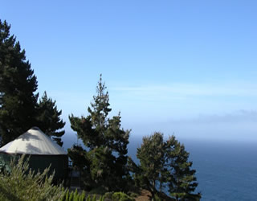

Login
- What is a yurt?
- Our luxury yurts are permanent structures four feet off the ground.
Each yurt has canvas walls, a wooden floor, and a roof dome that can be opened.
- How are the yurts furnished?
- Each yurt is furnished with a queen-size bed with down quilt and gas-fired stove.
The luxury camping experience also includes electricity and a sink with hot and cold running water. Shower and restroom facilities are located in the lodge.
- What should I bring?
- Bring a sense of adventure and some time to relax! Most guests also pack comfortable walking shoes and plan to dress for changing weather with layers of clothing.
Yurt Packages
A variety of luxury yurt packages are available. Choose a package below and contact us to begin your reservation. We're happy to build a custom pakacage just for you!
| Package Name | Description | Nights | Cost Per Person |
|---|---|---|---|
| Weekend Escape | Two breakfasts, a trail map, a picknic snack | 2 | $450 |
| Zen Retreat | Four breakfasts, a trail map, a pass for daily yoga | 4 | $600 |
| Kayak Away | Two breakfasts, two hours of kayak rental daily, a trail map | 2 | $500 |